Organizing Committee
General Chairs
generalchairs-assets25@acm.org
-
Shaun Kane Google Research
-
 Kristen Shinohara RIT
Kristen Shinohara RIT
Technical Paper Chairs
-
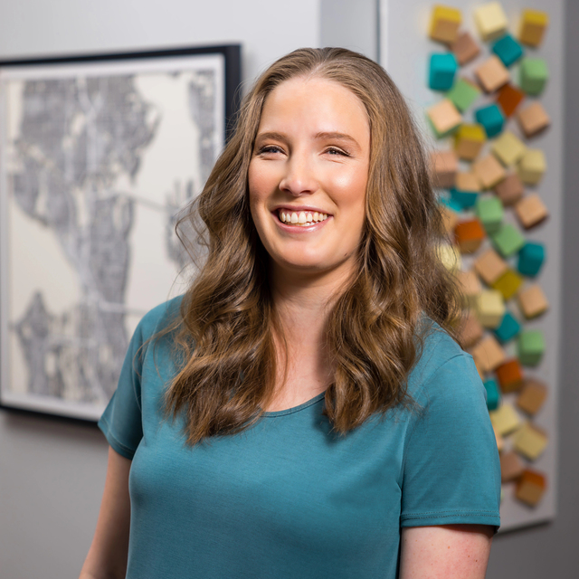
Cynthia Bennett Google Research
-
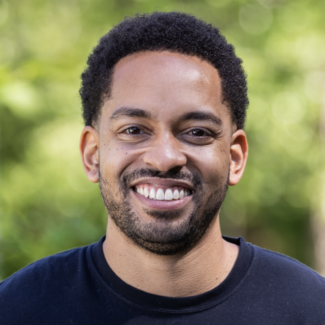
Martez Mott Microsoft Research
Treasurer/Registration Chair
-
Elaine Short Tufts University
Proceedings Chair
-
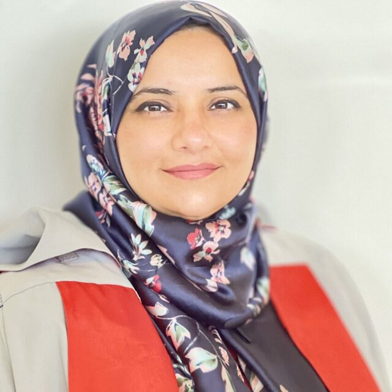
Maryam Bandukda University College London
Posters and Demos Chairs
-
Catherine Baker Creighton University
-
Roshan Peiris RIT
Workshop Chairs
-
Kotaro Hara Singapore Management University
-
 Annuska ZolyomiUW Bothell
Annuska ZolyomiUW Bothell
Web Chairs
-
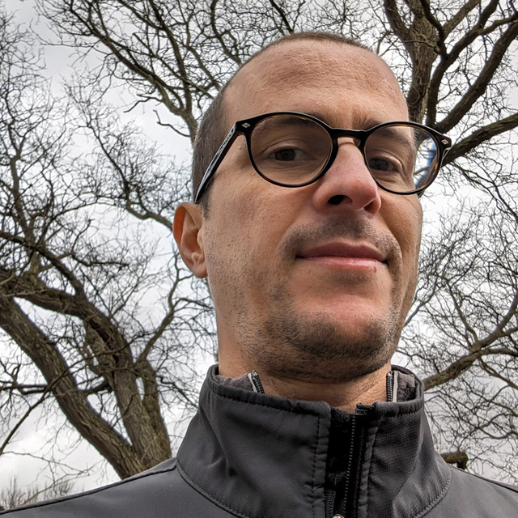
Caluã de Lacerda Pataca RIT
-
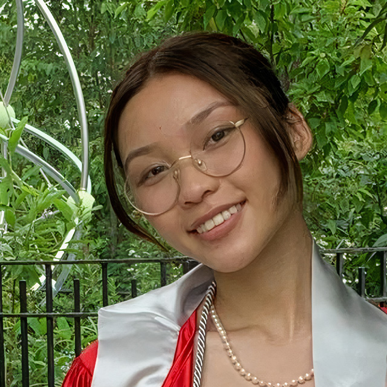
Lily Chau RIT
Hybrid Chairs
-
 Vinitha Gadiraju Wellesley College
Vinitha Gadiraju Wellesley College -
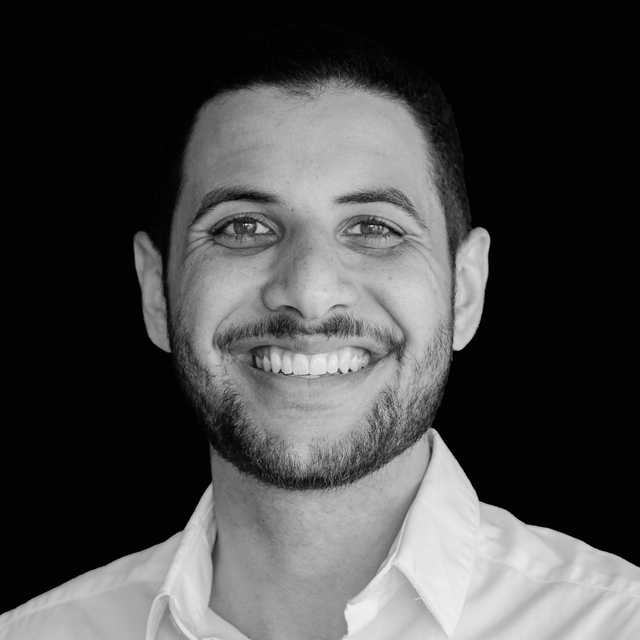
Oliver Alonzo DePaul University
Doctoral Consortium Chairs
-
Maitraye Das Northeastern University
-
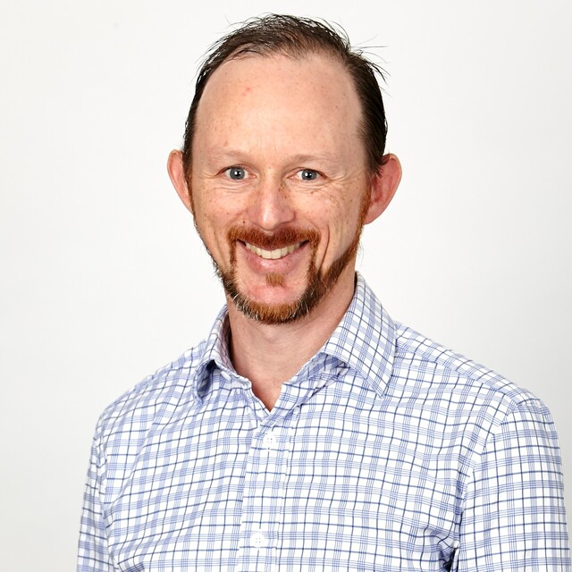
Matthew Butler Monash University
Student Research Competition Chairs
-
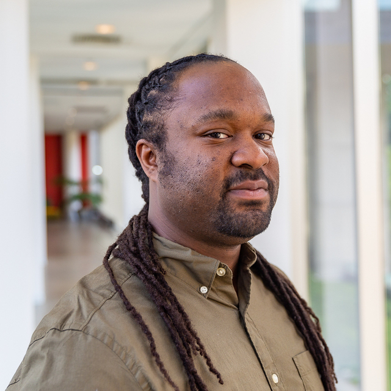
Patrick Carrington Carnegie Mellon University
-
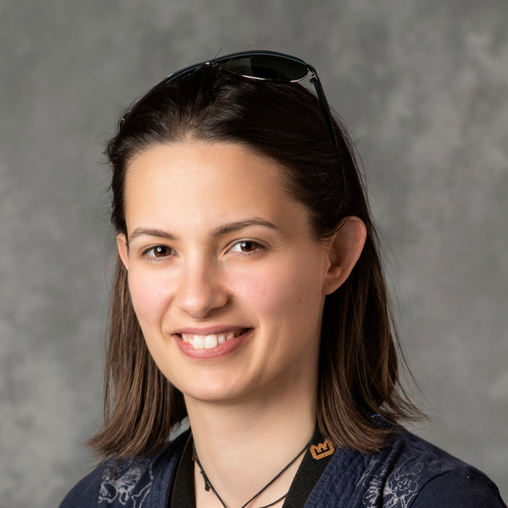
Giulia Barbareschi Keio University
Local Chairs
-
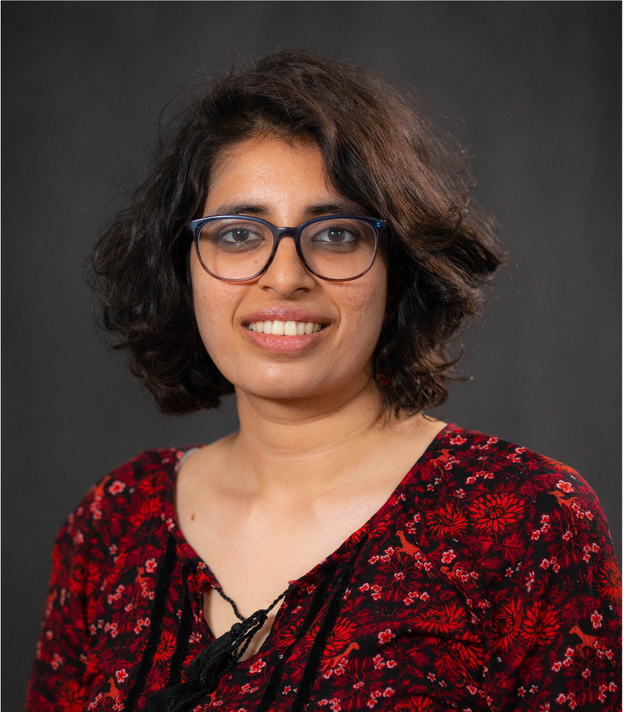
Varsha Koushik Colorado College
-
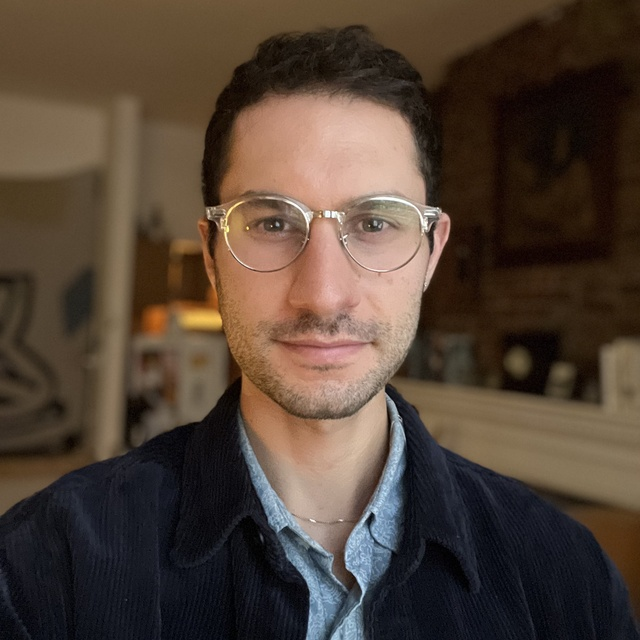
Willie Payne University of North Carolina
Accessibility Chairs
-
Abraham Glasser Gallaudet University
-
Ather Sharif University of Washington
-
Franklin Mingzhe Li Carnegie Mellon University
Mentoring Chair
-
Yasmine Elglay Western Washington University
SV Chair
-
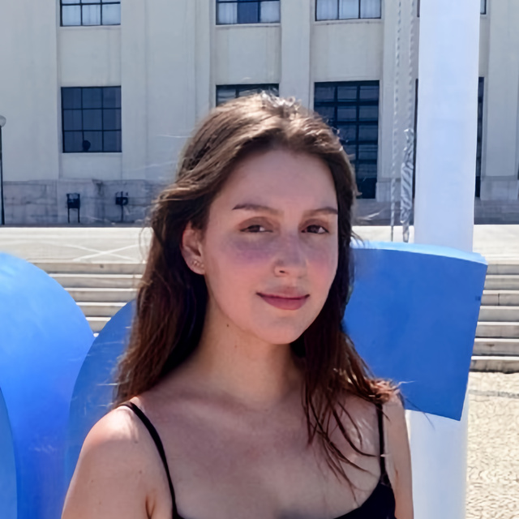
Patricia Piedade University of Lisbon
-
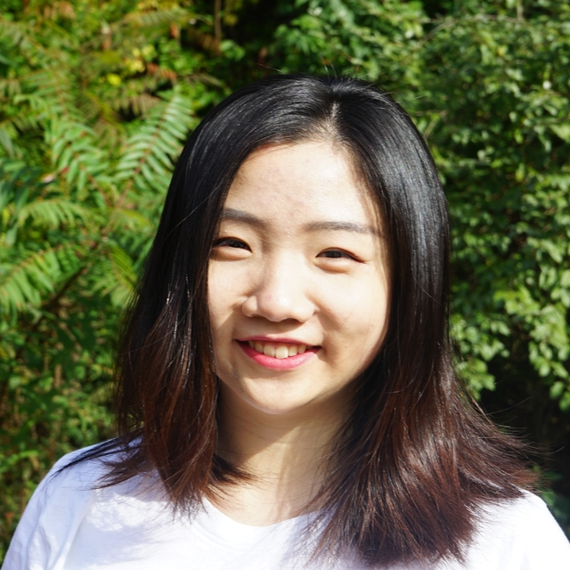
Junhan ‘Judy’ Kong University of Washington
Experience Reports Chairs
experience-reports-assets25@acm.org
-
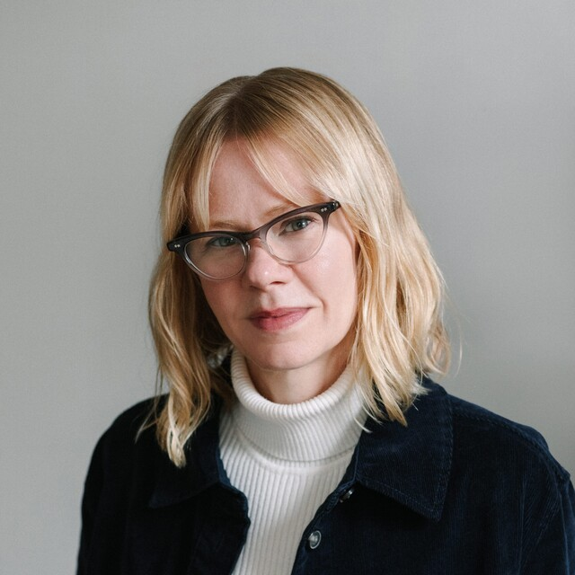
Lauren Race NYU
-
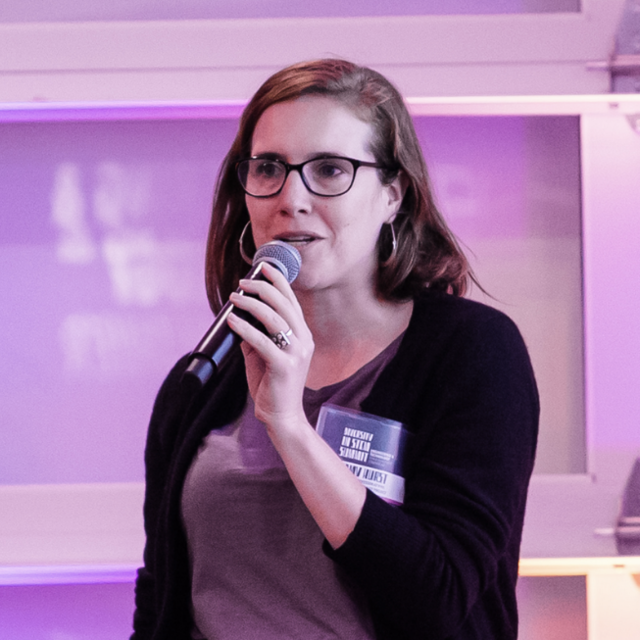
Amy Hurst NYU
Publicity Chair
-
 Garreth Tigwell RIT
Garreth Tigwell RIT
Sponsorship Chairs
-
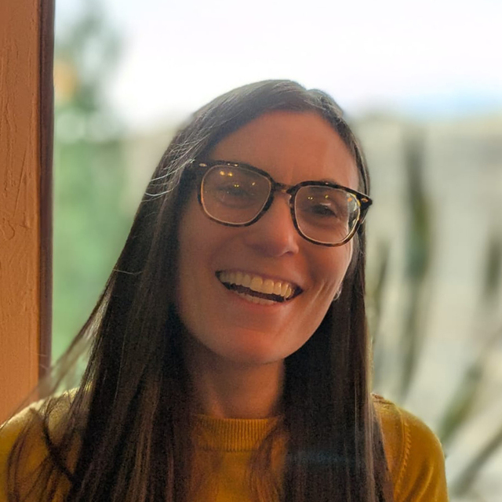
Halley Profita EmotiBit
-
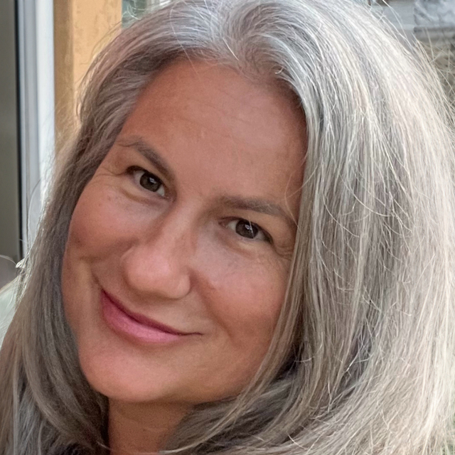
LouAnne Boyd Chapman University